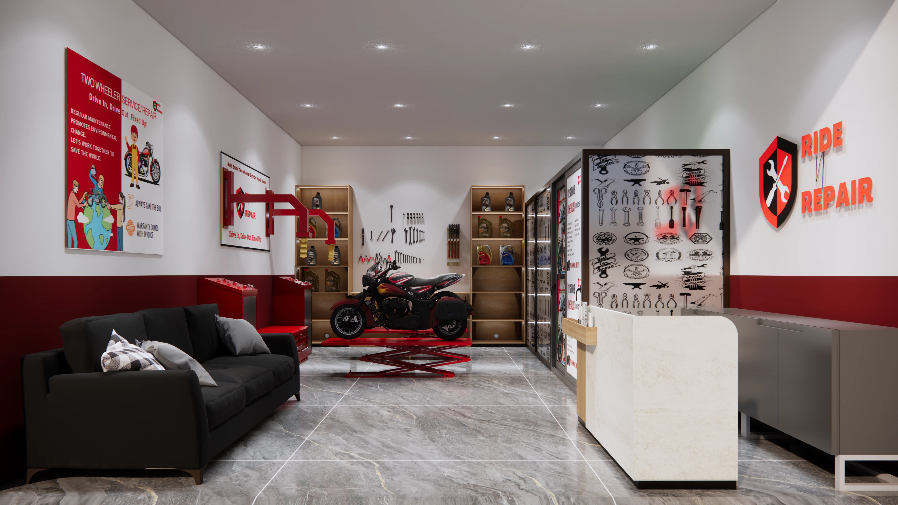
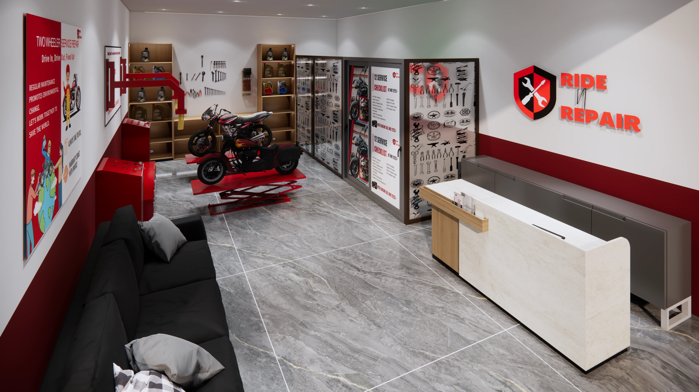
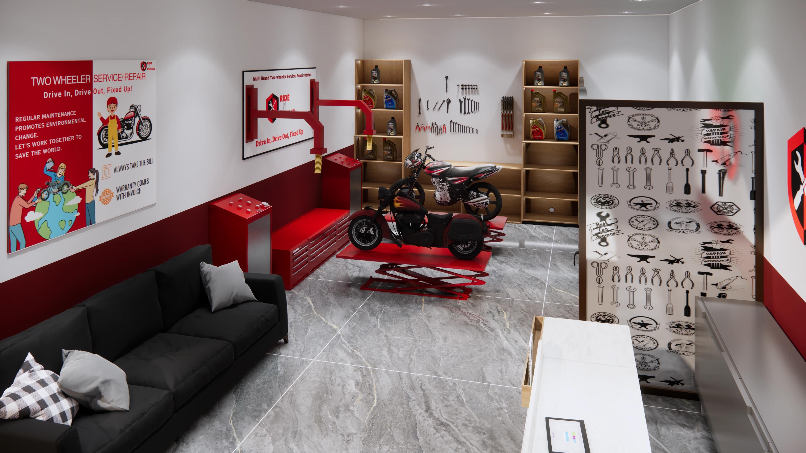

Franchise
Build a Luxury Vehicle Repair Brand in Your City
Ride N Repair is building the future of doorstep car & bike care. If you want to own a premium brand that becomes a legacy — this is your moment.
This is a modern vehicle repair franchise built for India — ideal if you’re exploring a two wheeler franchise, bike service franchise, or car service franchise with a luxury customer experience.
Why now
Why Ride N Repair?
We’re building a luxury-grade standard for vehicle care: fast, transparent, and engineered for trust — designed to scale as a vehicle service franchise across cities.
Brand that feels premium
Design-led experience, strong identity, and a trust-first customer journey.
Unit economics + operations
Repeat customers, predictable service demand, and scalable local execution.
Training + playbooks
Hiring, onboarding, quality checks, and SOPs — built for consistent outcomes.
Technology backbone
App-led workflows, real-time updates, lead systems, and performance visibility.



Franchise FAQs
Vehicle Franchise Questions, Answered
If you’re searching for the best repair franchise or vehicle franchise opportunity, here are the most common questions we get.
What services does this franchise cover?
Doorstep bike service & repair, car servicing, inspections, common maintenance, and support workflows — structured for quality and repeat demand.
Who is this franchise best for?
Operators and entrepreneurs who want a premium brand, strong SOPs, and a tech-led model — not a typical garage experience.
How do leads and bookings work?
Customers discover Ride N Repair online and via local demand. The operation runs on structured workflows and a trust-first customer journey.
How do I apply for the franchise?
Submit the form on this page with your city, investment range, and timeline. Our team reviews your details and shares the next steps.
Legacy
Own a brand your city will remember.
Premium experience. Trusted technicians. Tech-led operations. A franchise designed to scale.